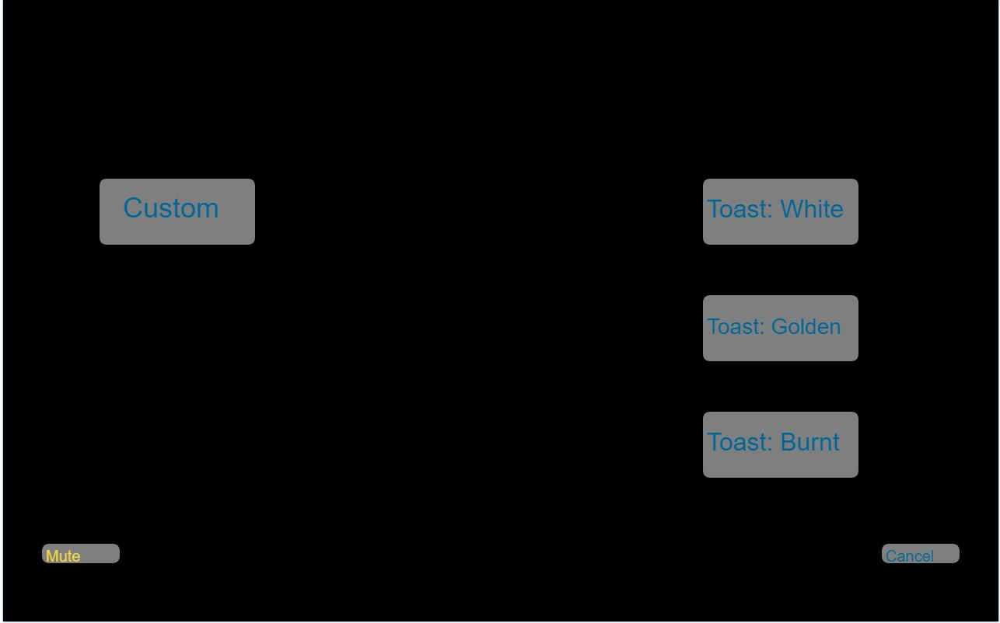
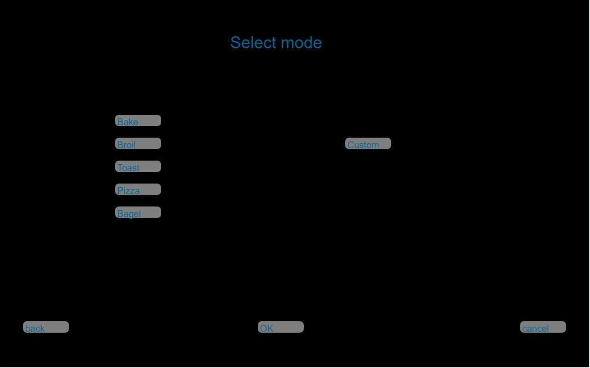
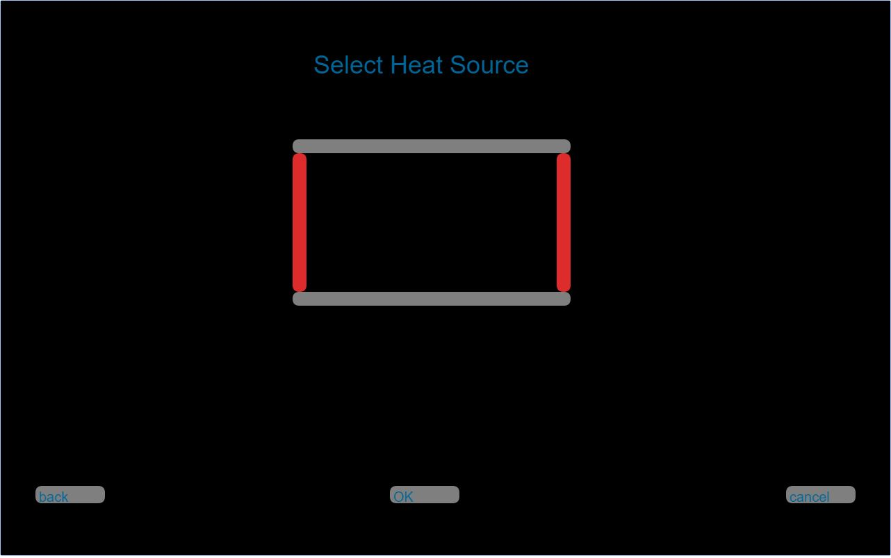
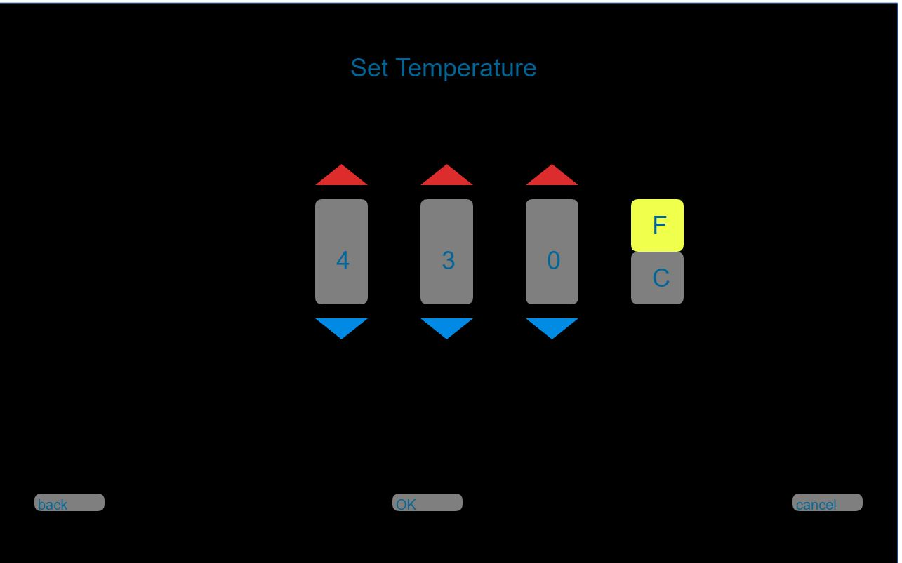
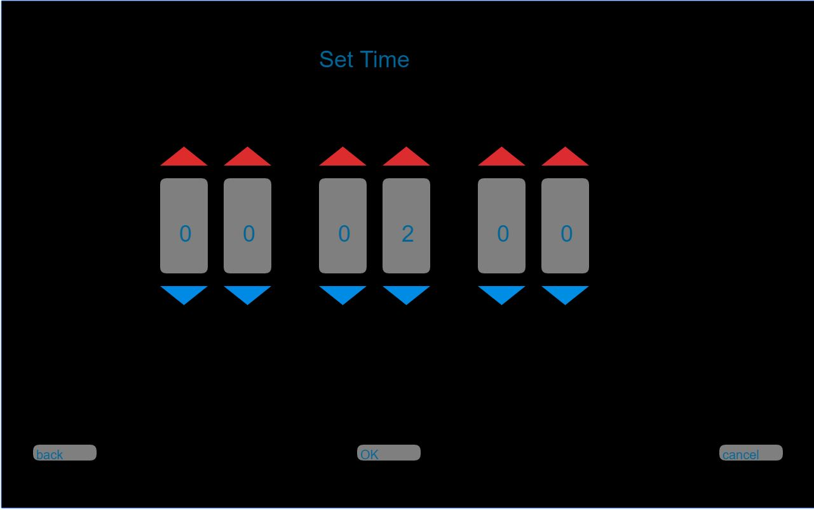
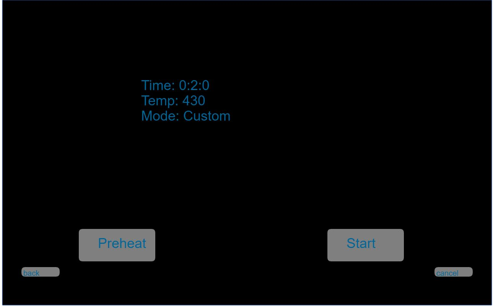
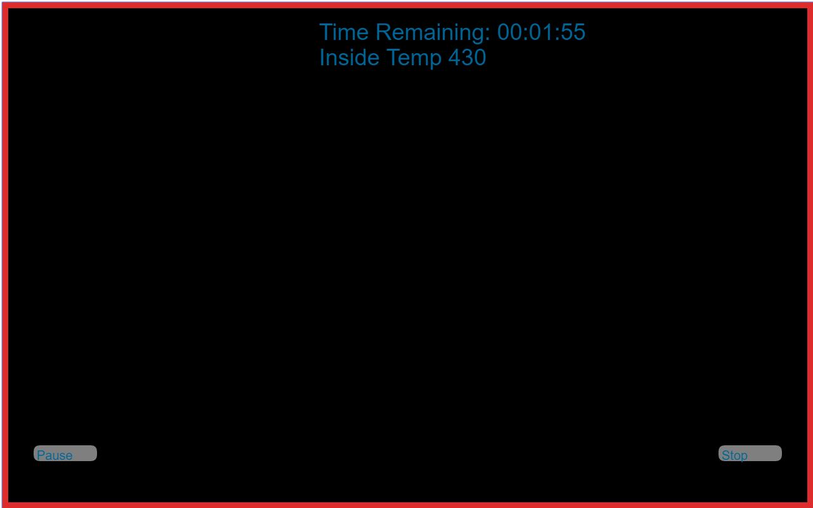

Explanation
Reasons that this is a good Inteface
The interface allow the user only access to one function at a time which minimize the possibility of inputing in correct informations
Due to function is not shown at the same time it allow more simple look for interface and not blocking the view of what inside
For temperature use can choose between Fahrenheit or Celsuis (fig4)
User is given precision control over both the temperature and time (fig4 and fig5)
There is a Mute option if user doesnt like the noise of the toaster oven (fig1) (use with caution)
The Toaster Oven offer a preheating option that allow use to set what temperature the toaster oven should be (fig6)
The preheat function has a safety mechanism which turn of the toaster after 5min(the application is sset to 10 sec for demo purpose)
When the Toaster Oven is on there is a red Frame around the inteface indicating that it on and it hot
When cooking is done the toaster oven will play a sound ever 2 sec and blinking borders
There are preset that user can select (fig1)
User can still modify after selecting presets
User last use setting is save
User can choose where the heat souce should be coming from (fig3)

fig1: User can choose to create custom time and temp or select a preseted option

fig2: User can select a mode(heat source and temperature)

fig3: Selecting heat souces

fig4: precision contol over Temperature

fig5: precision contol over Time

fig6: User can start or select preHeat option

fig7: Red frame to indicate that oven is on. Show remaining time and temp inside without blocking the view of the inside